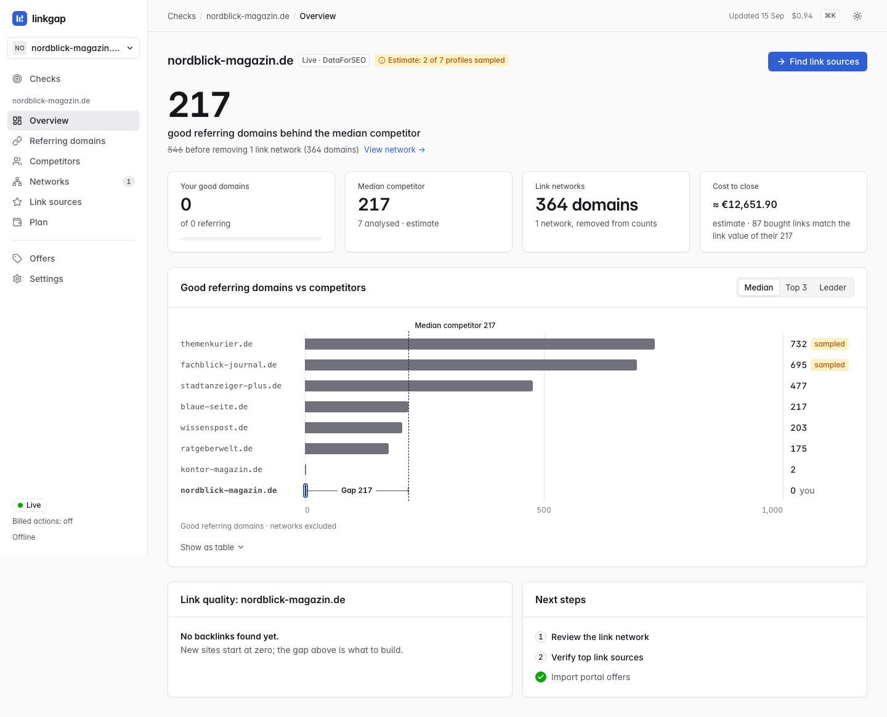
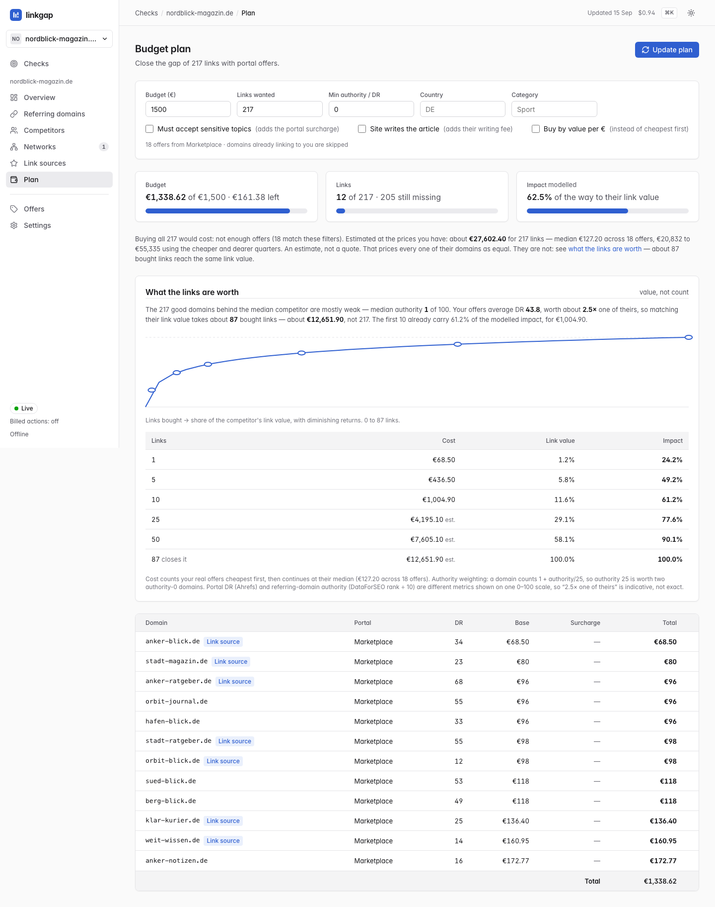
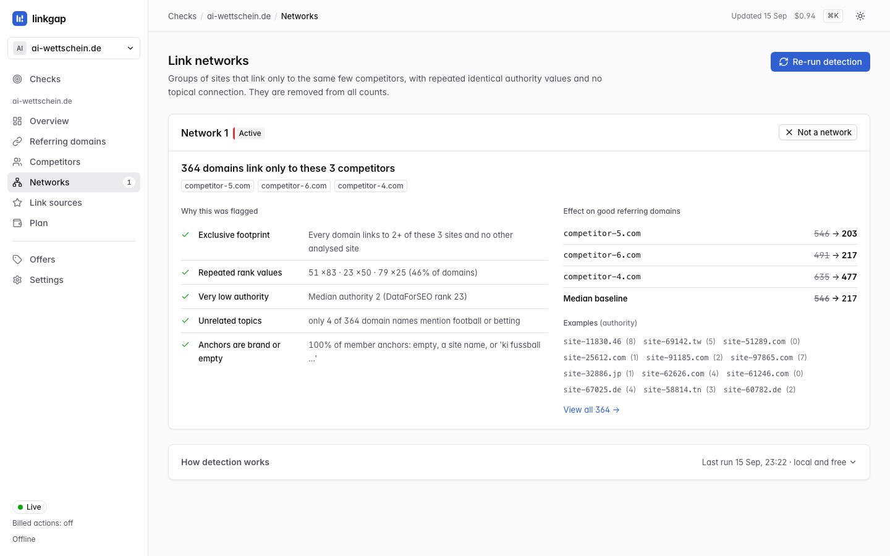
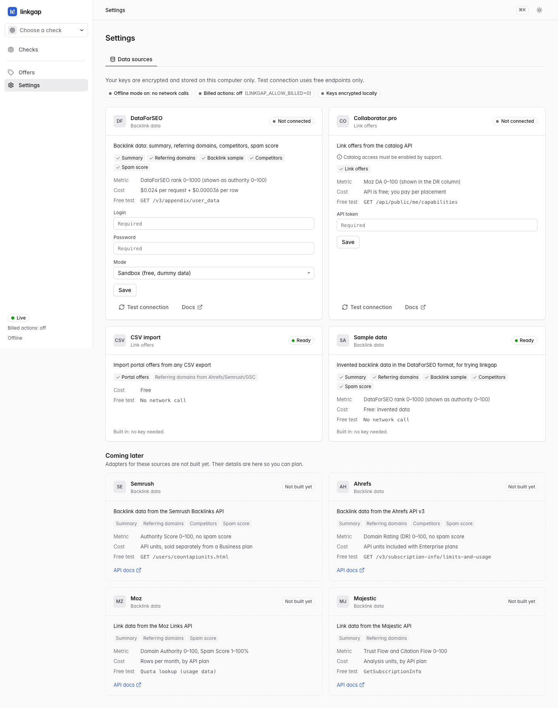

Early access
Know which links count.
Close the gap with the ones you're missing.
linkgap rates every backlink, removes bought link networks from the numbers, and tells you how many good links you are really behind your competitors, where to get them, and what closing the gap costs.
Get early access An app you run on your own machine. A hosted version is coming.
-
546217 good links behind, once one bought network stops counting - 364 domains in a single network shared by three competitors
- 2,221 link sources the competitors had and this site did not
Measured on the author's own site, a real site that launched in September 2026 with zero backlinks. Every number on this page comes from that run. Site and domain names in the screenshots are fictional, so nobody's profile is on display here; nothing else was changed.

Most of a backlink profile does not count.
You buy a link, or you earn one, and then you wait for a number to move. The trouble is that the numbers you are chasing are full of links that were never worth anything, and your competitors' numbers are full of links they bought by the hundred.
A quarter of a leading profile was spam
Of the 1,000 referring domains sampled from the market leader, 294 were rated spam and 11 weak. Every verdict is a rule with points, visible on the row that earned it.
Three rivals shared one bought network
364 unrelated small-business domains, linking to those three sites and to nobody else measured. Counted as real links, they made the gap look more than twice as big.
So the honest gap was 217, not 546
That is the difference between a budget you cannot justify and a shortlist you can act on this month.
Four steps: check, clean, compare, plan.
One answer per screen, and every number can be exported.
-
Check
Enter a domain. linkgap pulls its profile and its competitors from your own data account, rates every referring domain, and puts the result on one card: the gap, your good domains, the rivals analysed, and a warning when a link network is involved. Sample checks are badged as sample, so invented numbers never mix into a real report.

-
Clean
Every referring domain gets good, weak or spam from rules that show their points: spam score, very low authority, outbound link count, spam anchors, broken links. Hover a chip and it tells you what it added and where the threshold sits. Disagree, and you override it for one site or for the whole check, in bulk, with undo.

-
Compare
Once the profiles are clean, the comparison is worth something: how many good referring domains you are behind the median, the top three or the leader. Then the other half of the answer, every good site linking to at least two competitors and not to you. Here that was 2,221 sources, 84 of them strong enough to chase.

-
Plan
Give it a budget and it buys from the offers you imported — cheapest first, or by value per euro — skipping domains that already link to you, with any portal surcharge as its own column so the total is what you actually pay. At €1,500, real prices from a German link marketplace bought 12 links for €1,338.62. By count that is 205 short of 217. By value it is 62% of the way, because the domains behind that gap are mostly weak (median authority 1 of 100) and a bought link is worth about 2.5 of them. Matching their link value takes about 87 links, roughly €12,650 — and the first ten carry 61% of the modelled impact for about €1,005.

The prices in this screen are real prices from a German link marketplace; only the site names are fictional. Impact is modelled, and labelled as such: every domain is weighted by authority, and the curve flattens because a site at zero gains most from its first links. It is the shape of the thing, not a ranking forecast.


The flagship
The 364-domain network three competitors were sharing.
This is the part no backlink tool told the author about. A group of domains that link to the same few competitors and to nobody else measured, carrying repeated identical authority values and no topical connection to the subject at all. linkgap flags the group, shows its evidence, and stops counting it.
Why it was flagged
- Exclusive footprint
- Every one of the 364 domains links to at least 2 of these 3 sites, and to no other analysed site.
- Repeated rank values
- The same authority values again and again: 51 ×83, 23 ×50, 79 ×25. That is 46% of the group sitting on three numbers.
- Very low authority
- Median authority 2 out of 100.
- Unrelated topics
- Only 4 of 364 domain names have anything to do with the subject. The rest are unrelated small businesses in a dozen countries.
- Brand or empty anchors
- 100% of the anchors from these domains are empty or a bare site name.
What it was worth
Good referring domainsbefore → after
wissenspost.de546→ 203blaue-seite.de491→ 217stadtanzeiger-plus.de635→ 477- Median baseline
546→ 217
Nearly two thirds of one competitor's profile was a network. And if linkgap has it wrong, the card has a Not a network button: one click puts those links back into every number on every screen.

Bring your own data.
linkgap does not resell backlink data. You connect the account you already pay for, and the keys stay on your machine.
DataForSEO
Backlink summaries, referring domains, backlink samples, competitors and spam score. Its 0–1000 rank is shown as authority 0–100 throughout.
Collaborator.pro
Link offers from the catalog API, so the budget planner has real prices to work with. Catalog access has to be enabled on your account by their support.
CSV import
Portal offers from any export, with domain and price as the only required columns. Importing referring domains from an Ahrefs, Semrush or Search Console export is not built yet.
Semrush, Ahrefs, Moz, Majestic
Listed in the app with their metric, their pricing model and their free test endpoint, so you can plan for them. The adapters do not exist yet, and the cards say so rather than pretending.
- Keys are encrypted locally. Stored in a key file outside the project, never logged, never rendered. The interface shows
••••and nothing more. - Billed calls are off by default. Anything that would spend money is refused before a single HTTP request happens, and every estimate is shown before you confirm.
- It runs fully offline. One environment variable makes every outbound call fail fast. Fonts, icons and styles are served from your own machine.

What it is not.
The app is honest about its own numbers, so this page had better be honest about the app.
-
Not a hosted service yet
linkgap is an app you run on your own computer, with its data in a single file next to it. A hosted version is coming, and early access is how you hear about it first.
-
Early access, not a finished product
It is one person's daily tool on a real site. It does what this page shows, and there are rough edges beyond that.
-
Sampled data on very large profiles
For the market leader here, 1,000 of 25,216 referring domains were fetched, and not the top 1,000. linkgap labels those counts as estimates on every screen rather than quietly rounding up.
-
No outreach inbox
No email sequences, no CRM, no rank tracking. It stops at a shortlist, a budget and an export, and leaves the pitching to you.
Questions
What data sources does it use?
DataForSEO for backlink data and Collaborator.pro for link offers, both with your own account and your own key. CSV import handles portal offers from any tool's export. Semrush, Ahrefs, Moz and Majestic are described in the app, including their free test endpoints, but their adapters are not built yet.
What does it cost to run?
You pay your data provider, not a markup. On DataForSEO's published rates, a competitor profile at 2,000 referring domains works out at roughly $0.26, and the app shows the estimate before you confirm anything. Sample and sandbox checks cost nothing at all. Pricing for linkgap itself is not set yet, which is the honest answer rather than a number on a card.
Is my data private?
Your checks live in one file on your machine. Keys are encrypted with a key file kept outside the project, they are never written to a log or an error message, and not one character of them is rendered in the interface. There is no telemetry in the app, and no analytics or tracking on this page.
Does it work offline?
Yes. In offline mode every outbound call fails fast with a plain message, and everything already fetched stays browsable. The interface itself has no external dependency: fonts, icons and styles are all local. Test connection, when you do go online, is only allowed to call free endpoints.
Find out which of your links count.
If you buy or earn links for a living and you have wondered how much of a rival's profile is real, this was built for exactly that afternoon. Tell me about the site you are working on and I will get you in.
Opens an email to seeberger.solutions@gmail.com. No form, no signup, no list. A hosted version is coming.